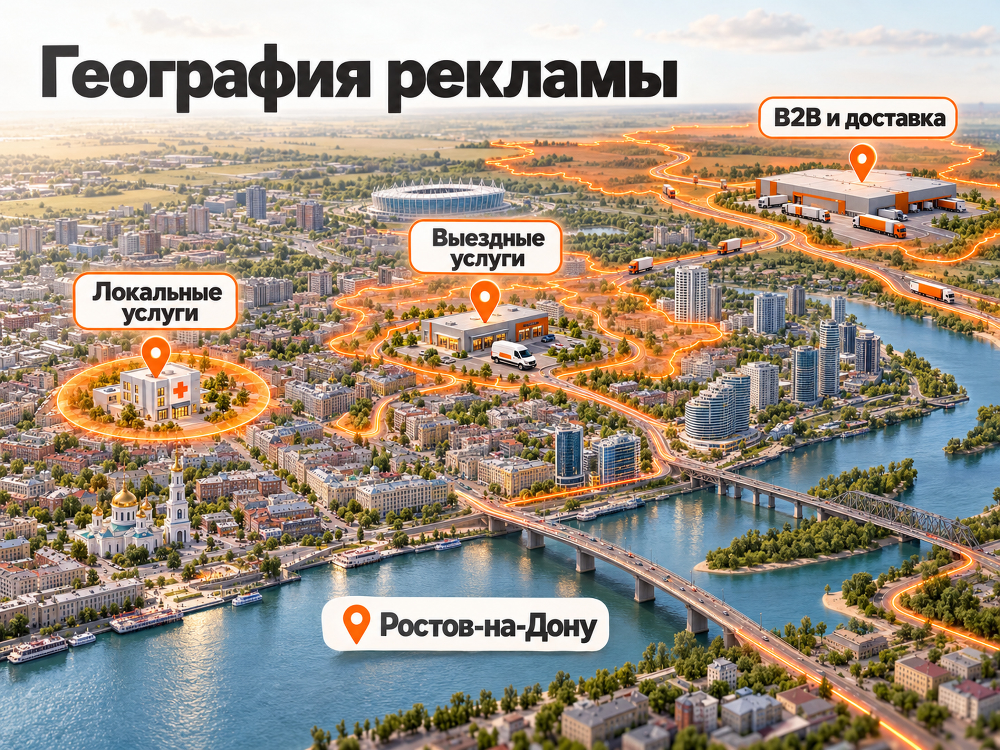

Блог о платном трафике
Яндекс Директ в Ростове-на-Дону
Настраиваю и веду Яндекс Директ для бизнеса в Ростове-на-Дону и Ростовской области. Меня зовут Максим Мирошников, я частный специалист по платному трафику с опытом более 10 лет. Работаю лично, без агентства и посредников. Стоимость моих услуг начинается от 30 000 ₽ в месяц, рекламный бюджет оплачивается отдельно.
Моя задача - не просто запустить объявления, а выстроить рекламу, которая приводит целевые обращения и позволяет оценивать их стоимость, качество и влияние на продажи.
Работаю удалённо. Раньше жил в Ростове-на-Дону, поэтому хорошо знаком с городом. Но при настройке рекламы важнее не местонахождение специалиста, а понимание бизнеса, географии его клиентов и реальной экономики привлечения.
Что входит в настройку Яндекс Директа
Полноценная настройка Яндекс Директа начинается с анализа бизнеса, спроса и экономики привлечения клиентов. Только после этого имеет смысл собирать кампании, создавать объявления и выбирать рекламную стратегию.
Я не начинаю проект со списка ключевых фраз. Сначала нужно понять, что именно продаёт компания, кто покупатель, какой средний чек, как выглядит путь до заявки и что бизнес считает хорошим результатом.
Если реклама уже работает, сначала смотрю накопленную статистику. Старые кампании могут содержать полезную информацию о поисковых запросах, стоимости обращений, аудиториях и эффективности посадочных страниц. Удалять всё и создавать заново не всегда разумно.
Обычно моя работа включает следующие этапы:
- Анализ бизнеса. Изучаю товары, услуги, конкурентов, спрос, приоритетные направления и экономику привлечения.
- Проверка сайта. Смотрю предложение, посадочные страницы, формы обратной связи, мобильную версию и возможные причины потери заявок.
- Настройка аналитики. Проверяю Яндекс Метрику, цели, отслеживание обращений и передачу данных о результатах.
- Подготовка кампаний. Собираю структуру, ключевые фразы, аудитории, исключения и рекламные объявления.
- Настройка показов. Выбираю географию, стратегию, бюджет и подходящие рекламные инструменты.
- Запуск и оптимизация. Анализирую первые результаты, поисковые запросы, площадки, расходы и качество обращений.
После запуска работа не заканчивается. Я продолжаю проверять, какие рекламные связки действительно приводят клиентов, а какие просто расходуют бюджет.
Подробнее о составе работ можно прочитать в разделе что входит в настройку и ведение рекламы.
Как настроить географию рекламы в Ростове
Для локального бизнеса геотаргетинг в Яндекс Директе нужно настраивать по фактической территории обслуживания, а не просто по адресу компании.
Например, стоматологии обычно нужны пациенты, которым удобно приезжать в клинику. Строительная компания может работать по всему Ростову и области, а поставщик промышленного оборудования способен обслуживать покупателей из других регионов.
Поэтому я разделяю три сценария.
| Тип бизнеса | Подход к географии |
|---|---|
| Локальные услуги | Ростов-на-Дону или подходящие районы города |
| Выездные услуги | Ростов и те населённые пункты области, куда компания реально выезжает |
| Интернет-магазины и B2B | Все регионы, в которые возможны доставка или обслуживание |

Отдельного внимания требуют компании, работающие в Аксае, Батайске, Азове и других населённых пунктах рядом с Ростовом. Если бизнес обслуживает эти территории, не стоит автоматически исключать их из охвата. Но включать всю Ростовскую область без понимания реальной зоны работы тоже неправильно.
Что изменилось в геотаргетинге Яндекса в 2026 году
31 августа 2026 года Яндекс сообщил об обновлении алгоритмов геотаргетинга. Система стала учитывать более широкий контекст местоположения и интересов пользователя. Прежняя отдельная настройка расширенного географического таргетинга больше недоступна.
Это важно для локального бизнеса: выбор Ростова в настройках не означает, что каждый пользователь физически находится в городе в момент показа. Система может учитывать его связь с выбранным регионом и вероятность покупки.
Поэтому после запуска я проверяю фактическую географию трафика и конверсий. Если определённые территории дают нецелевые обращения, сначала разбираюсь в причинах и затем использую доступные корректировки и другие настройки.
Главное правило: рекламная география должна соответствовать реальным возможностям компании. Расширение охвата имеет смысл только тогда, когда бизнес способен обслуживать привлечённых клиентов.
Поиск, РСЯ и ретаргетинг: что выбрать
Для бизнеса в Ростове-на-Дону я выбираю инструменты Яндекс Директа исходя из того, как клиенты ищут товар или услугу. Запускать одновременно все рекламные форматы необязательно.
| Инструмент | Когда подходит |
|---|---|
| Поиск Яндекса | Пользователь уже ищет конкретную услугу или товар |
| РСЯ | Нужно привлекать потенциальных клиентов за пределами поисковой выдачи |
| Ретаргетинг | Нужно повторно обратиться к пользователям, которые уже взаимодействовали с компанией |
Поисковая реклама
На Поиске человек самостоятельно формулирует потребность.
Например:
- ремонт автомобиля в Ростове;
- установка кондиционера Ростов-на-Дону;
- строительство дома Ростовская область;
- стоматология Ростов-на-Дону.
Это примеры коммерческого спроса. При настройке важно не только подобрать фразы, но и разделить разные намерения пользователей.
Человек, который ищет стоимость услуги, и человек, который уже готов оформить заказ, могут находиться на разных этапах принятия решения.
Для небольшого локального бизнеса с выраженным поисковым спросом я часто рассматриваю Поиск как первый инструмент для тестирования рекламы.
Реклама в РСЯ
В Рекламной сети Яндекса объявления показываются за пределами основной поисковой выдачи. Здесь большую роль играют аудитории, визуальные материалы, предложение компании и качество трафика.
РСЯ может быть полезна для услуг с более длинным циклом выбора, продвижения специальных предложений и расширения охвата.
Но переносить поисковые объявления в РСЯ без адаптации я бы не рекомендовал. Это разные сценарии взаимодействия с рекламой.
Ретаргетинг
Повторная реклама может возвращать пользователей, которые уже посещали сайт, изучали предложения или совершали другие отслеживаемые действия.
Особенно это актуально для строительства, недвижимости, сложных B2B-услуг и других направлений, где решение принимается не сразу.
При этом ретаргетинг должен быть осмысленным. Нет пользы в том, чтобы постоянно показывать одинаковое объявление людям, которые уже купили товар или больше не заинтересованы.
Подробнее различия разбираю в статье Поиск или РСЯ в Яндекс Директе.
Сколько стоит реклама в Ростове-на-Дону
Стоимость Яндекс Директа складывается из оплаты работы специалиста и непосредственно рекламного бюджета. Эти расходы необходимо считать отдельно.
Стоимость моей работы начинается от 30 000 ₽ в месяц. Итоговая сумма зависит от сложности проекта, объёма рекламных кампаний и необходимых работ.
Рекламный бюджет расходуется непосредственно на размещение объявлений в Яндексе и не входит в стоимость моих услуг.
В отдельных проектах могут потребоваться дополнительные расходы на сайт, коллтрекинг, CRM или техническую настройку аналитики. Их необходимость определяется после изучения проекта.
Как рассчитать рекламный бюджет
Универсального бюджета для всех компаний Ростова не существует. Стоимость привлечения зависит от ниши, конкуренции, спроса, сайта и качества предложения.
Для предварительного расчёта можно использовать простую модель.
Рекламный бюджет = необходимое количество заявок × прогнозная стоимость заявки.
Например, сначала определяем, сколько целевых обращений необходимо бизнесу, затем оцениваем возможную стоимость привлечения и получаем предварительный бюджет на тест.
Но это ещё не прогноз продаж. Часть обращений может оказаться нецелевой, а часть потенциальных покупателей не заключит сделку.
Поэтому перед запуском я стараюсь определить допустимую стоимость привлечения клиента исходя из маржинальности, среднего чека и конверсии обращений в продажи.
Готовый прогноз проверяется фактическими результатами рекламы.
Если нужно разобраться с расходами подробнее, есть отдельный материал: Стоимость контекстной рекламы: бюджет и расчёт.
Почему реклама может не приносить заявки
Даже правильно настроенный Яндекс Директ не гарантирует обращения, если предложение компании неинтересно аудитории или сайт плохо превращает посещения в заявки.
В статистике могут быть нормальные поисковые запросы, клики и приемлемая стоимость перехода, но продаж при этом мало.
Причины бывают разными:
- Объявление привлекает пользователей, которые не готовы покупать.
- Реклама ведёт на страницу, не соответствующую запросу.
- На сайте непонятны стоимость, условия или преимущества услуги.
- Форма заявки неудобная или работает с ошибками.
- Менеджеры долго отвечают потенциальным клиентам.
- Метрика учитывает формальные действия вместо реальных обращений.
- Кампания получает конверсии, но значительная их часть оказывается нецелевой.
Поэтому я смотрю дальше рекламного кабинета: анализирую сайт, формы, предложение, цели Метрики и последующую обработку обращений.
Иногда одна проблема на посадочной странице приводит к большим потерям, чем несколько неудачных объявлений.
Мой подход: сначала найти слабое место, которое сильнее всего влияет на стоимость привлечения клиента, а потом заниматься менее значимыми настройками.
Как оценивать эффективность Яндекс Директа
Для бизнеса главный показатель рекламной кампании не количество кликов, а стоимость привлечения подходящих клиентов и конечный финансовый результат.
Я обычно разделяю показатели на несколько уровней.
| Показатель | Что помогает понять |
|---|---|
| Показы, CTR, цена клика | Как реклама привлекает трафик |
| Конверсия сайта | Как посетители превращаются в обращения |
| CPL | Сколько стоит полученная заявка |
| Целевые заявки | Сколько обращений соответствует требованиям бизнеса |
| Стоимость продажи | Сколько рекламных денег потрачено на привлечённого покупателя |
Для расчёта стоимости заявки используется формула:
CPL = рекламные расходы / количество заявок.
Но обычный CPL не всегда отражает реальную эффективность.
Предположим, одна кампания привлекает много дешёвых обращений, большинство из которых не подходит компании. Другая приводит меньше заявок, но они чаще превращаются в продажи.
Вторая кампания может быть выгоднее, даже если цена обращения у неё выше.
Поэтому я предпочитаю анализировать квалифицированные лиды, а при наличии данных CRM - реальные продажи и стоимость привлечения клиента.
Также важно учитывать, что рекламный CPL показывает стоимость обращения по расходам на размещение. Для оценки полной экономики бизнеса нужно учитывать оплату специалиста и другие затраты на маркетинг.
Именно по этим данным я принимаю решения об оптимизации и масштабировании рекламы.
Примеры рекламных проектов
Я занимаюсь платным трафиком более 10 лет и работал с разными направлениями бизнеса. Для компаний Ростова полезны не только местные кейсы, но и проекты из других городов, где похожи спрос, модель продаж и ограничения рекламы.
Несколько примеров из моего портфолио:
Автосервис в Рыбинске. Пример локального бизнеса, для которого важны география, обращения от автовладельцев и стоимость привлечения заказа.
Протезирование зубов в Москве. Медицинская услуга, где важно учитывать конкретные намерения пациентов, конкуренцию и качество обращений.
Центр психологии в Липецке. Пример продвижения услуг, для которых предложение и доверие потенциального клиента имеют большое значение.
Строительство домов. Проект с более длинным циклом принятия решения, где важно оценивать не только обращения, но и дальнейшее движение клиента к сделке.
Эти проекты не являются универсальными прогнозами для Ростова-на-Дону. Даже в одной отрасли результаты могут сильно отличаться из-за региона, конкуренции, сайта, стоимости услуг и работы отдела продаж.
Смысл кейсов в том, чтобы показать подход к реальным задачам, а не обещать одинаковую стоимость заявки каждому заказчику.
Больше примеров есть в разделе кейсов.
Как я работаю с заказчиками
Я работаю как частный специалист и ИП. Все проекты веду лично, без помощников, учеников и менеджеров между мной и заказчиком.
Сотрудничество начинается с обсуждения бизнеса и текущей ситуации с рекламой.
Обычно процесс выглядит так:
- Знакомство с проектом. Вы присылаете сайт, рассказываете об услуге, целевой аудитории и географии работы.
- Первичный анализ. Я изучаю предложение, существующую рекламу и возможные направления запуска.
- Согласование условий. Определяем состав работ, стоимость, бюджет и формат взаимодействия.
- Подготовка и запуск. Настраиваю рекламные кампании, аналитику и необходимые инструменты.
- Ведение рекламы. Анализирую результаты, проверяю качество обращений, корректирую кампании и обсуждаю изменения с заказчиком.
Работаю официально, по договору как ИП, с возможностью электронного документооборота.
Общение ведём напрямую в мессенджерах. У заказчика есть доступ к рекламному кабинету и статистике, поэтому результаты можно проверять самостоятельно. Вместо формальных отчётов ради отчётов предпочитаю обсуждать конкретные изменения и показатели.
Личные встречи для настройки и ведения Яндекс Директа не обязательны. Работа с рекламным кабинетом, Метрикой и аналитикой выполняется удалённо.
Как заказать настройку и ведение рекламы
Если вашему бизнесу в Ростове-на-Дону или Ростовской области нужна настройка Яндекс Директа, начните с краткого описания задачи.
Для первого обсуждения достаточно сообщить:
- адрес сайта, если он есть;
- какие товары или услуги нужно рекламировать;
- географию обслуживания клиентов;
- примерный рекламный бюджет;
- работает ли сейчас реклама и устраивает ли её результат.
По этим данным я смогу предварительно оценить задачу и обсудить подход к запуску или оптимизации кампаний.
Не обещаю фиксированное количество заявок до изучения спроса и экономики бизнеса. Сначала нужно понять, насколько реклама подходит конкретному предложению и какие результаты можно разумно ожидать.
На главной странице моего сайта находятся контакты, отзывы, условия работы и портфолио.
Если вам нужен специалист, который лично занимается рекламой и отвечает за принимаемые решения, напишите мне в Telegram или MAX.